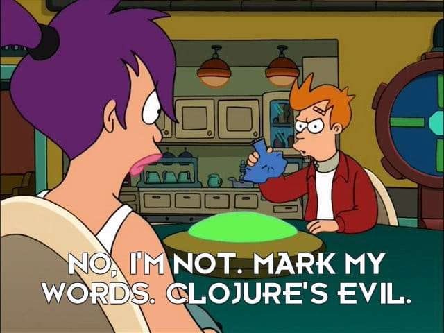

C, Crypto & Clojure
@lvh
Slides
https://www.lvh.io/CCryptoClojure
Introduction
Who am I?

C, Crypto & Clojure
(with ✨)
Why C?
- Don't implement your own crypto
- C API as a
.h, really about the OS ABI PCLMULQDQ,AES-NI, &c
Why Clojure?
- We use it a lot
- Easier
(apply clojure @life)
- Modern lisp
- Targets JVM, JS, CLR…
Challenges
JVM
- Its own ecosystem
- Includes cryptography
Let's call some native code!
- JNI 😭
- JNA 😢
- JNR 😒
jnr-ffi
public interface LibC { public int gettimeofday( @Out @Transient Timeval tv, Pointer unused ); }
struct
public static final class Timeval extends Struct { public final time_t tv_sec = new time_t(); public final SignedLong tv_usec = new SignedLong(); }
lvh@zygalski ~/P/libsodium (master)> wc -l **h ... 9166 total
How Clojure helped
The Clojure way
- Have data
- Don't mess it up
✨
Helping outside of caesium
- Paul Kehrer (@reaperhulk)
- of Frinkiac/Morbotron fame
- professionally screws with OpenSSL
- (co-founded pyca/cryptography)

Nonce-misuse resistant cryptography
**
Q&A
@lvh
_@lvh.io